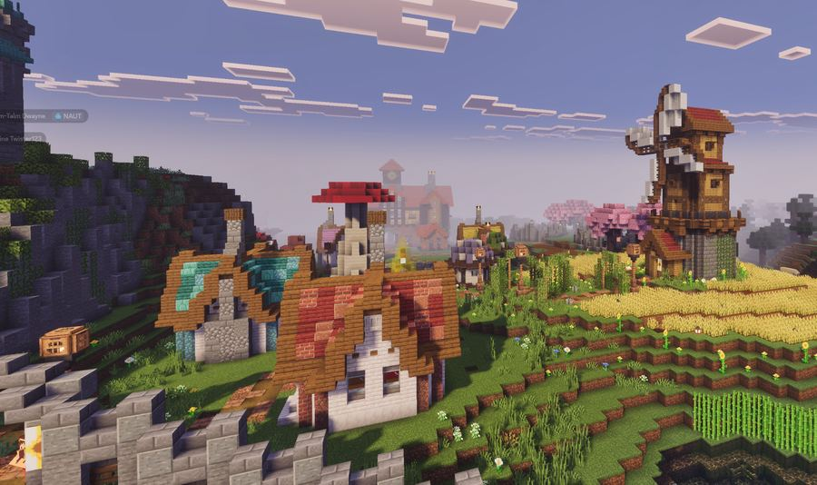

| Home Sweet Home | Visit Elytheria | Boletus City | Queen Neon | Our Government |
| Move Here! | Photo Garden | Guestbook | Web Ring | Java Map |
BOLETUS WEATHERMostly gentle Flowers: blooming Windmill: turning Mushroom shade: excellent Forecast supplied by looking outdoors. WEB VISITORS004207 You are a beautiful visitor. REQUIRED COMPUTER• 800 × 600 screen • 256 happy colors • Java optional • Cookies accepted with tea • Modem patience recommended | MOVE TO BOLETUS! WE SAVED YOU A GARDEN PATCH! Possible future neighbors. Actual house availability may depend on whether the miller is still using the spare cottage. The Boletus New Residents Bureau helps U.U.R. citizens relocate to Elytheria, register a household, open a market stall, join a guild, or apply for a garden plot. Moving to Elytheria does not end Union citizenship. It mostly increases the number of baskets you own. We are especially looking for:
BoletusRelocation.class — Java Form Applet This form does not actually send personal information. The old modem cable has been used to support a tomato vine. |
QUEEN NEON SAYSWHY MOVE HERE?✓ Garden plots ✓ Market stalls ✓ Windmill power ✓ Friendly crown ✓ U.U.R. protection ✓ Very large mushroom WEB BADGESGARDEN RADIOSound is currently sleeping. |